17 Carbonyl compounds
AS 3.5 Carbonyl compounds
17 Carbonyl compounds
本章只覆盖 Cambridge International AS Level Chemistry 9701 的 3.5 Carbonyl compounds。题干与选项通过 OCR 录入；原题中的结构式、反应图和表格按原 PDF 中的独立图像对象提取。无法独立提取的页面截图不放入本页；本页不加入 A2 内容。
Learning objectives
学完本章后，你应该能够：
- identify aldehydes and ketones from their structural and displayed formulae;
- explain the polarity of the carbonyl group and describe nucleophilic addition with hydrogen cyanide;
- distinguish aldehydes from ketones using Tollens’ reagent, Fehling’s solution and 2,4-DNPH;
- describe oxidation of aldehydes and reduction of aldehydes and ketones;
- select suitable conditions for controlled oxidation;
- apply the triiodomethane test and carbonyl reaction pathways.
17.1 Structure and properties
The carbonyl group is a carbon atom double-bonded to an oxygen atom, C=O. Oxygen is more electronegative than carbon, so the bond is polarised:
\[\ce{C^{delta+}=O^{delta-}}\]
The carbonyl carbon is electron-deficient and is attacked by nucleophiles. The carbonyl carbon is trigonal planar, with bond angles close to 120°. The C=O bond consists of one sigma bond and one pi bond; the pi bond is the part that is broken when a nucleophile adds to the carbonyl group.
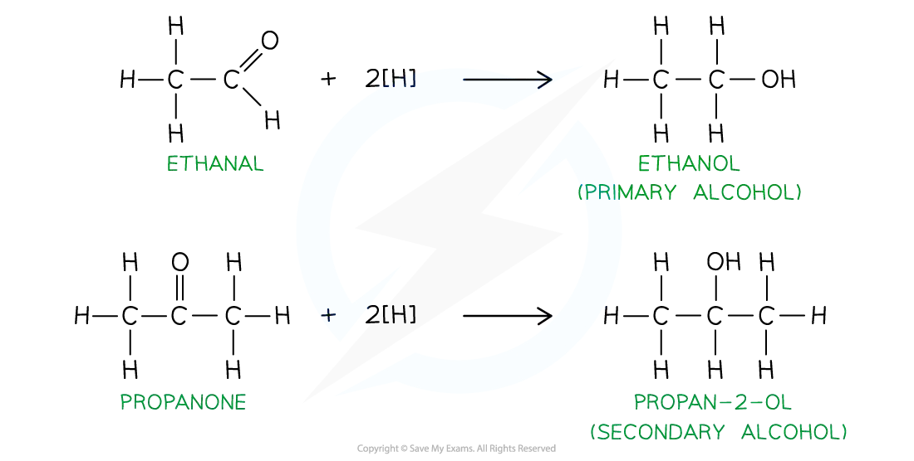
An aldehyde has the general formula RCHO; its carbonyl group is at the end of a carbon chain. A ketone has the general formula RR'CO; its carbonyl group is between two carbon atoms.
| Type | General structure | Example |
|---|---|---|
| aldehyde | RCHO |
methanal, HCHO; ethanal, CH3CHO |
| ketone | RR'CO |
propanone, CH3COCH3; butanone, CH3COCH2CH3 |
The suffix for an aldehyde is -al and the suffix for a ketone is -one. The carbonyl carbon in an aldehyde is carbon 1. In a ketone, the chain is numbered so that the carbonyl carbon has the lowest possible number.
17.2 Nucleophilic addition of hydrogen cyanide
Reaction and conditions
Hydrogen cyanide adds across the C=O bond of both aldehydes and ketones. The reaction uses HCN with a small amount of soluble cyanide, such as KCN or NaCN, as a catalyst. The product is a hydroxynitrile (also called a cyanohydrin):
\[\ce{RCHO + HCN -> RCH(OH)CN}\]
\[\ce{RR'CO + HCN -> RR'C(OH)CN}\]
The reaction produces a new C–C bond and converts the planar carbonyl carbon into a tetrahedral carbon atom. If the product carbon is attached to four different groups, a pair of optical isomers can form. The planar carbonyl group can be attacked from either side, so the products are normally formed as a racemic mixture.
Mechanism
- The cyanide ion,
CN−, is the nucleophile. Its lone pair attacks theδ+carbonyl carbon. - The C=O pi-electron pair moves onto oxygen, forming an alkoxide ion.
- The alkoxide ion accepts a proton from HCN, producing the hydroxyl group and regenerating
CN−.
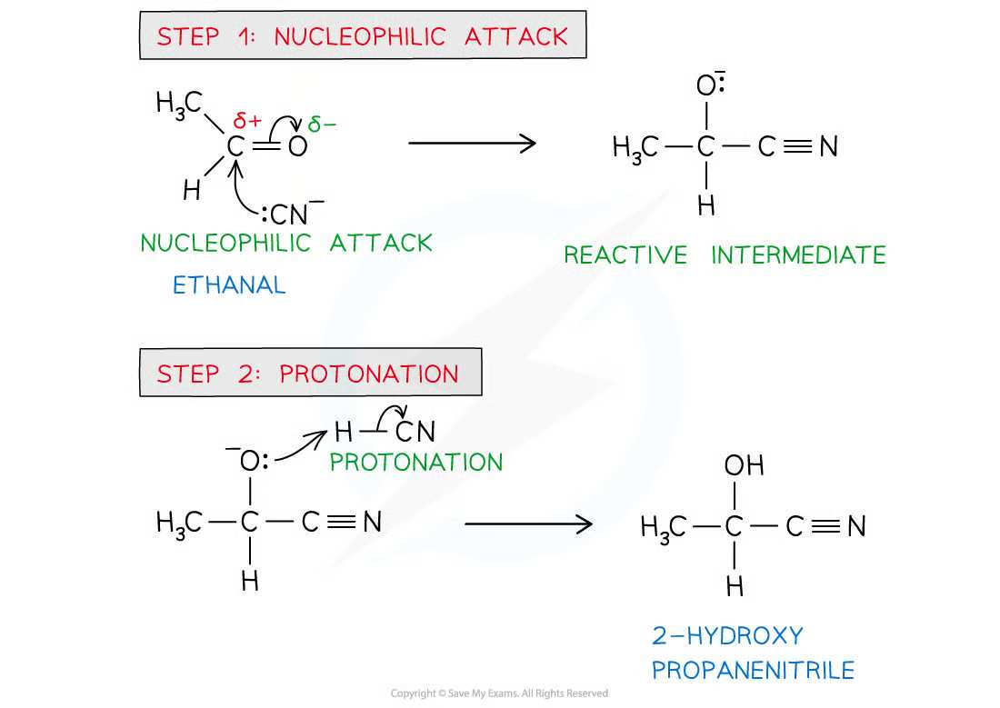
The reaction is called nucleophilic addition because a nucleophile adds to a polar multiple bond and only one organic product is formed. It is not nucleophilic substitution: no atom or group is replaced.
17.3 Oxidation of aldehydes and ketones
Aldehydes are readily oxidised to carboxylic acids:
\[\ce{RCHO + [O] -> RCOOH}\]
For example:
\[\ce{CH3CHO + [O] -> CH3COOH}\]
Acidified potassium dichromate(VI) changes from orange to green. Acidified potassium manganate(VII) changes from purple to colourless. When a primary alcohol is oxidised, distillation removes the aldehyde as it forms and limits further oxidation. Refluxing allows the aldehyde to remain in the flask and gives the carboxylic acid.
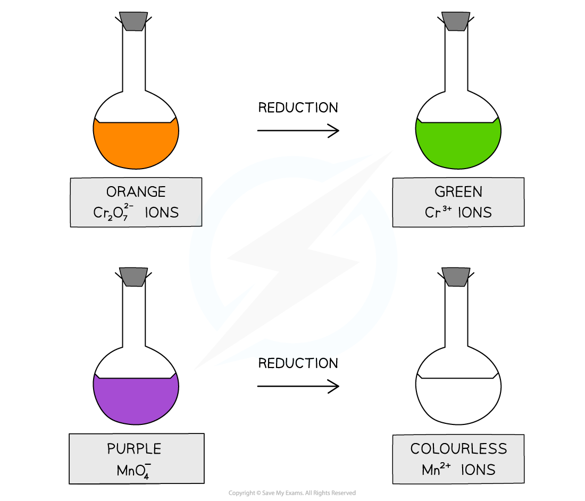
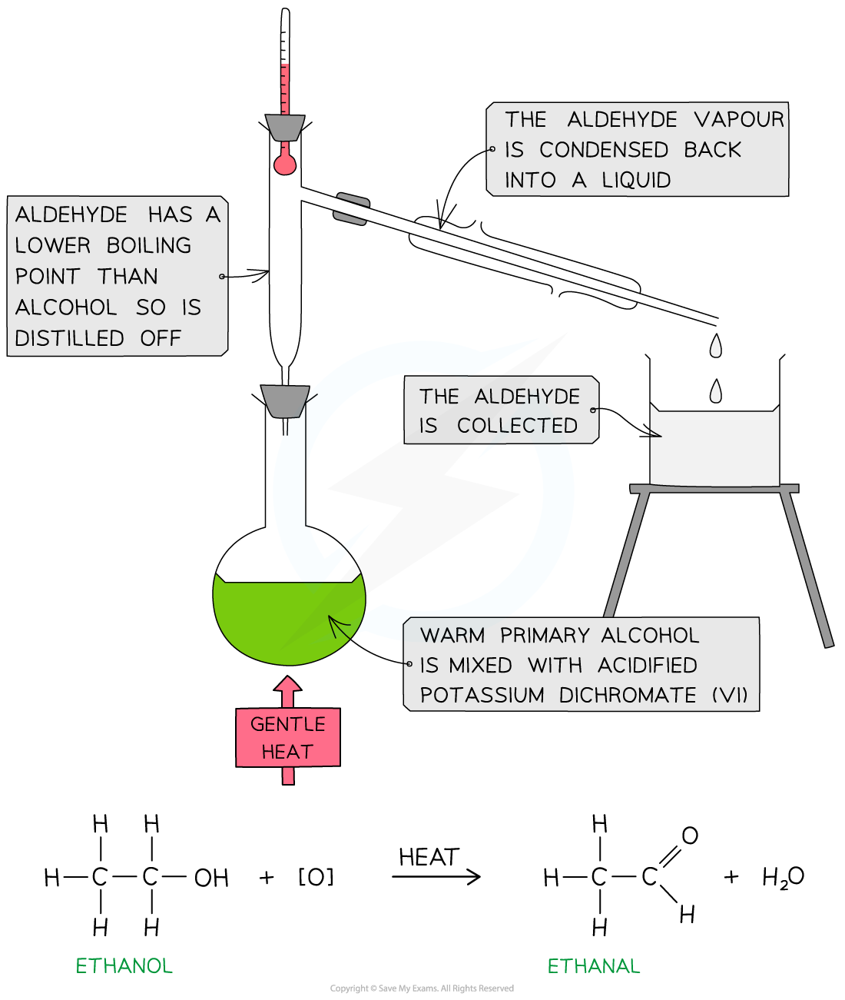
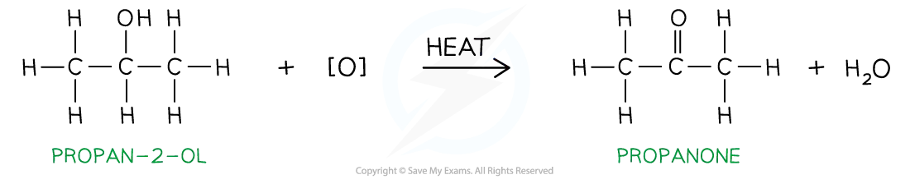
Ketones do not oxidise under the usual AS test conditions. Oxidising a ketone requires breaking carbon–carbon bonds, so ketones do not give the aldehyde oxidation tests.
The oxidation distinction is important:
| Compound | Acidified dichromate(VI) / manganate(VII) | Tollens’ reagent | Fehling’s solution |
|---|---|---|---|
| aldehyde | oxidised; oxidising agent changes colour | silver mirror | blue solution gives red precipitate |
| ketone | no reaction under AS conditions | no visible change | solution remains blue |
17.4 Reduction of aldehydes and ketones
The AS reducing agent is aqueous sodium tetrahydridoborate(III), NaBH4, usually warmed in aqueous or aqueous-ethanolic solution. In equations, [H] may be used to represent the reducing agent.
An aldehyde is reduced to a primary alcohol:
\[\ce{RCHO + 2[H] -> RCH2OH}\]
A ketone is reduced to a secondary alcohol:
\[\ce{RR'CO + 2[H] -> RR'CHOH}\]
The carbonyl carbon becomes tetrahedral. A ketone reduction product may contain a chiral carbon if the two groups originally attached to the carbonyl carbon are different. An aldehyde reduction product has two hydrogen atoms attached to the new alcohol carbon and therefore cannot have a chiral centre at that carbon.
The following extracted note diagram summarises reduction of aldehydes and ketones:
17.5 Chemical tests
2,4-dinitrophenylhydrazine (2,4-DNPH)
Add 2,4-DNPH reagent to the carbonyl compound. An aldehyde or ketone gives an orange or deep-orange precipitate of a 2,4-DNPH derivative. A precipitate confirms a carbonyl group but does not distinguish an aldehyde from a ketone.
The derivative can be purified by filtration and recrystallisation. Its melting point can then be compared with reference melting-point data to identify the original carbonyl compound.
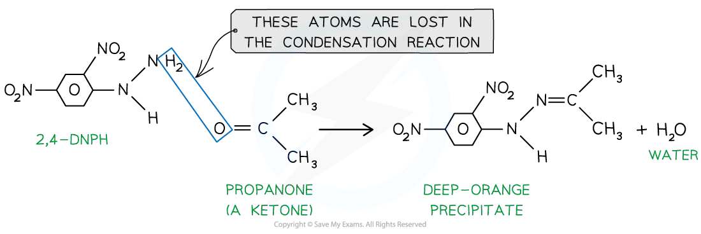
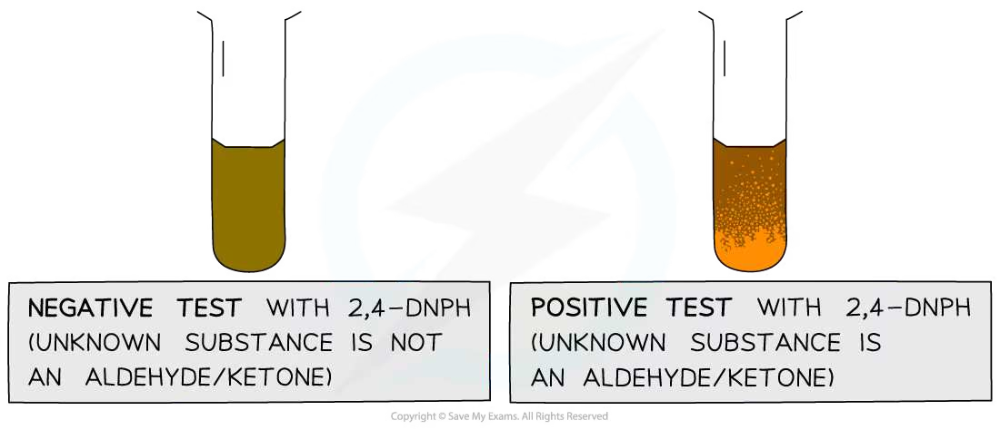
Tollens’ reagent
Tollens’ reagent is an alkaline solution containing the diamminesilver(I) complex, [Ag(NH3)2]+. Warm the compound with the reagent in a clean test tube:
- an aldehyde is oxidised to a carboxylate ion and silver(I) is reduced to silver, producing a silver mirror;
- a ketone gives no visible change.
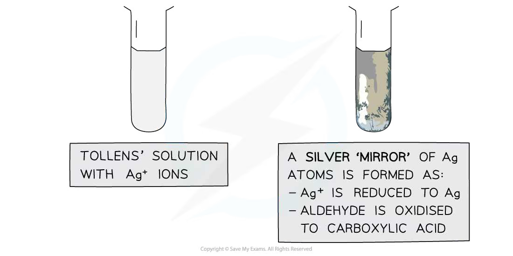
Fehling’s solution
Warm the carbonyl compound with Fehling’s solution:
- an aldehyde reduces blue
Cu2+ions to red copper(I) oxide,Cu2O; - a ketone gives no reaction and the solution remains blue.
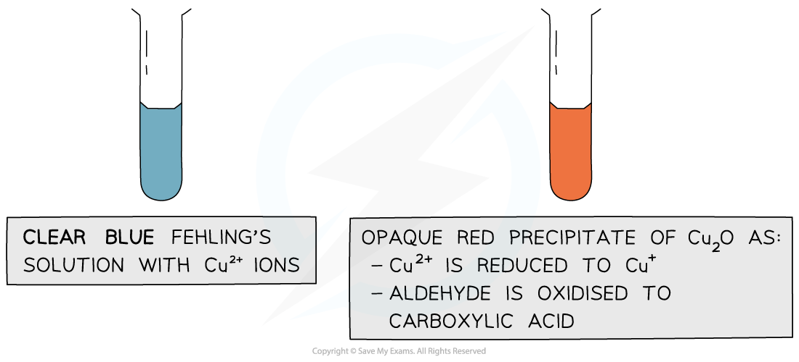
Triiodomethane test
Warm the compound with alkaline iodine solution. A pale-yellow precipitate of triiodomethane, CHI3, indicates either a methyl ketone group, CH3CO−, or the related CH3CH(OH)− group after oxidation. Propanone and ethanal-derived ethanol-type structures can therefore give a positive result, but not every aldehyde or ketone does.
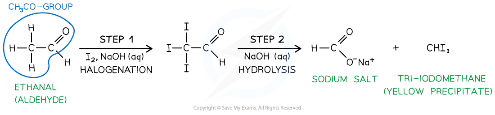
17.6 Reaction pathways and identification strategy
For an unknown organic compound, use the tests in a logical order:
- Use 2,4-DNPH to establish whether an aldehyde or ketone carbonyl group is present.
- If the 2,4-DNPH test is positive, use Tollens’ reagent or Fehling’s solution to distinguish aldehyde from ketone.
- Use acidified dichromate(VI) or manganate(VII) to confirm oxidation of an aldehyde, and record the colour change.
- Use NaBH4 to reduce the carbonyl compound and identify whether the product is a primary or secondary alcohol.
- Use the triiodomethane test when a
CH3CO−orCH3CH(OH)−group is suspected. - For a full identification, purify a 2,4-DNPH derivative and compare its melting point with data for known derivatives.
Hydroxynitriles can be hydrolysed under acidic conditions to form an alpha-hydroxycarboxylic acid. Reaction pathways may therefore combine nucleophilic addition, hydrolysis, oxidation, reduction, tests, stereoisomerism and percentage-yield calculations.
Chapter checklist
Multiple choice questions
以下 20 道选择题的文字来自原题 OCR；结构式和图示使用完整的独立原图，不使用整页题纸截图。
17 Carbonyl compounds — Multiple Choice: Easy
Question 1 · 3.5 Choice Easy Q1
What is formed when butanone is refluxed with a solution of NaBH4?
Show answer
C.
Question 2 · 3.5 Choice Easy Q2
In 1903 Arthur Lapworth became the first chemist to investigate a reaction mechanism. The reaction of hydrogen cyanide with propanone.
What do we now call the mechanism of this reaction?
Show answer
B.
Question 3 · 3.5 Choice Easy Q3
Which carbonyl compound(s) react with both LiAlH4 and Tollens’ reagent?
Show answer
B.
Question 4 · 3.5 Choice Easy Q4
In a nucleophilic addition reaction, aqueous methanolic solution of NaBH4 acts as a reducing agent when added to propanal, CH3CH2CHO.
What is the first step of this mechanism?
Show answer
C.
Question 5 · 3.5 Choice Easy Q5
The characteristic smell of burnt sugar is partly caused by the following compound.
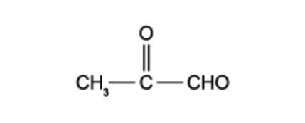
There are two functional groups in the compound. Which reagent will react with both functional groups?
Show answer
B.
Question 6 · 3.5 Choice Easy Q6
In which reaction is the organic compound oxidised?
Show answer
B.
17 Carbonyl compounds — Multiple Choice: Medium
Question 7 · 3.5 Choice Medium Q1
The compounds are:
- CH3COCH2CHO 2. CH3COCH2CH2OH 3. CH3CH2CH2CHO 4. CH3CH(OH)CH2CH3
Which of these compounds gives a positive response to Tollens’ reagent and can also be oxidised by acidified dichromate (VI) solution?
Show answer
B.
Question 8 · 3.5 Choice Medium Q2
When alkaline I2 solution is added to butanone, a yellow precipitate is formed. Which of the following compounds is responsible for the precipitate?
Show answer
D.
Question 9 · 3.5 Choice Medium Q3
Liquid L is known to be either a single organic compound or a mixture of organic compounds. Two tests were done on liquid L:
- When treated with sodium, L gives off hydrogen gas.
- When treated with 2,4-dinitrophenylhydrazine reagent, L gives orange crystals.
Which deductions about L can definitely be made?
- At least one component of L is an alcohol.
- At least one component of L is a carbonyl compound.
- Only one of the components of L is a carbonyl compound.
Show answer
D.
Question 10 · 3.5 Choice Medium Q4
The colour of warm acidified sodium dichromate (VI) changes from orange to green when added to compound Y. 1 mol of Y reacts with 2 mol of hydrogen cyanide in the presence of potassium cyanide. What could Y be?
Show answer
C.
Question 11 · 3.5 Choice Medium Q5
Hydroxyethanal has the structural formula HOCH2CHO. In an experiment hydroxyethanal is heated under reflux with an excess of acidified potassium dichromate (VI) until no further oxidation takes place.
What is the skeletal formula of the organic product formed in the experiment?
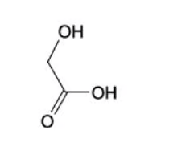
B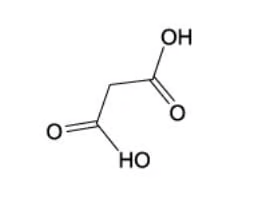
C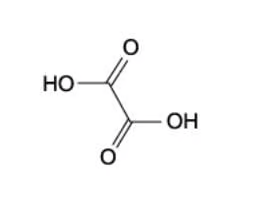
D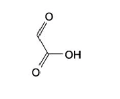
Show answer
C.
Question 12 · 3.5 Choice Medium Q6
Which reagent will give similar results with both propanone and propanal?
Show answer
A.
17 Carbonyl compounds — Multiple Choice: Hard
Question 13 · 3.5 Choice Hard Q1
When HCN reacts with butanal, CH3CH2CH2CHO, product X is formed. If X is then hydrolysed by aqueous acid, product Y is produced. When pentanal, C4H9CHO, is heated under reflux with acidified potassium dichromate (VI), product Z is formed. What is the difference in relative molecular mass of products Y and Z?
Show answer
C.
Question 14 · 3.5 Choice Hard Q2
Cyanohydrins, also called hydroxynitriles, can be made from carbonyl compounds by generating CN− ions from HCN in the presence of a weak base.
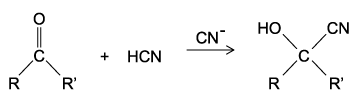
In a similar reaction, CH2CO2CH3− ions are generated from CH3CO2CH3 by strong bases. Which compound can be made from an aldehyde and CH3CO2CH3 in the presence of a strong base?
Show answer
C.
Question 15 · 3.5 Choice Hard Q3
When compound T reacts with its own oxidation product, a sweet-smelling liquid is produced. What is the identity of compound T?
Show answer
C.
Question 16 · 3.5 Choice Hard Q4
Three separate test tubes, 1, 2 and 3, each contain 1 mol of compound X. An excess of sodium borohydride is added to test tube 1 and an excess of acidified sodium permanganate is added to test tube 2. No reagent is added to test tube 3. Following this, 2 mol of HCN(g) is added to each test tube and the HCN completely reacts in all 3. What could X be?
Show answer
B.
Question 17 · 3.5 Choice Hard Q5
Glyceraldehyde, HOCH2CH(OH)CHO, is formed during photosynthesis on the pathway to glucose production. Which reagents produce an organic product without a chiral carbon atom when reacted with glyceraldehyde?
- Warmed acidified K2Cr2O7
- Fehling’s reagent
- NaBH4
Show answer
B.
Question 18 · 3.5 Choice Hard Q6
Which of the following techniques will increase the rate of reaction between ethanal and aqueous hydrogen cyanide?
- Increasing the temperature.
- Performing the reaction under ultraviolet light.
- Adding a small quantity of aqueous sodium cyanide.
Show answer
B.
Question 19 · 3.5 Choice Hard Q7
Hydrocarbons 1, 2 and 3 all occur naturally.
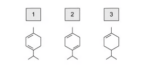
All three are treated with hot acidified potassium manganate (VII) separately. Which of the hydrocarbons 1, 2 and 3 will be split into two organic compounds, both containing a ketone group?
Show answer
C.
Question 20 · 3.5 Choice Hard Q8
Which carbonyl compounds can be easily oxidised to carboxylic acids that are readily soluble in water?
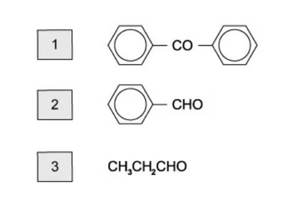
Show answer
D.
Structured questions
以下 10 道结构题的题干与小问使用 OCR 文字；仅保留能从原 PDF 独立提取的完整图像对象。
17 Carbonyl compounds — Structured Questions: Easy
Question 1 · 3.5 SQ Easy Q1
(a) State the reactants that can be oxidised to give an aldehyde and a ketone as products. [2 marks]
(b) State the oxidation products, where appropriate, of an aldehyde and a ketone. [2 marks]
(c) Describe how you could use 2,4-DNPH and melting point data to determine the identity of an unknown compound. [3 marks]
Question 2 · 3.5 SQ Easy Q2
Butanone can react with HCN. Complete the reaction mechanism shown in Fig. 2.1 by drawing four curly arrows.
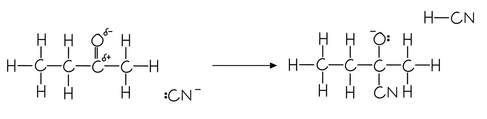
(b) Name the organic product produced in part (a). [1 mark]
(c) Explain why butanone has no positional isomers. [1 mark]
Question 3 · 3.5 SQ Easy Q3
Table 3.1 shows the initial observations for the reaction of Tollens’ reagent with aldehydes and ketones. Complete the final observations for aldehydes and ketones. [2 marks]
| Ketone: initial observation | Ketone: final observation | Aldehyde: initial observation | Aldehyde: final observation | |
|---|---|---|---|---|
| Tollens’ reagent | Colourless solution | Colourless solution |
Table 3.2 shows the initial observations for the reaction of Fehling’s solution with aldehydes and ketones. Complete the final observations for aldehydes and ketones. [2 marks]
| Ketone: initial observation | Ketone: final observation | Aldehyde: initial observation | Aldehyde: final observation | |
|---|---|---|---|---|
| Fehling’s solution | Blue solution | Blue solution |
(c) Ethanal and propanal are reacted separately and heated with an alkaline solution of iodine.
- State which aldehyde will give a yellow precipitate.
- Explain your answer to part (c)(i).
[2 marks]
17 Carbonyl compounds — Structured Questions: Medium
Question 4 · 3.5 SQ Medium Q1
Calcium and its compounds have a large variety of applications. Calcium metal reacts readily with most acids. When calcium metal is placed in dilute sulfuric acid, it reacts vigorously at first. After a short time, a layer of calcium sulfate forms on the calcium metal and the reaction stops. Some of the calcium metal and dilute sulfuric acid remain unreacted.
(a) Suggest an explanation for these observations. [1 mark]
(b) Calcium ethanedioate is formed when calcium reacts with ethanedioic acid, HOOCCOOH. Calcium ethanedioate contains one cation and one anion.
- State the full electronic configuration of the cation in calcium ethanedioate.
- Deduce the charge on the cation.
- Draw the fully displayed formula of ethanedioic acid.
[3 marks]
(c) Calcium chlorate(I), Ca(ClO)2, is used as an alternative to sodium chlorate(I), NaClO, in some household products.
- Write an ionic equation for the formation of chlorate(I) ion when cold aqueous sodium hydroxide reacts with chlorine. State symbols are not required.
- The chlorate(I) ion is unstable and decomposes when heated: 3ClO− → 2Cl− + ClO3−. Describe what is meant by disproportionation reaction.
- Deduce the oxidation number of chlorine in each species in the equation.
[3 marks]
(d) Calcium carbonate reacts with 2-hydroxypropanoic acid to form product Y.
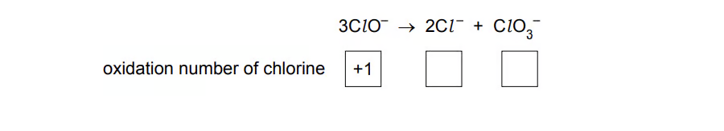
- Identify the two other products of the reaction of 2-hydroxypropanoic acid with calcium carbonate.
Two possible methods of making 2-hydroxypropanoic acid are shown in Fig. 1.2.
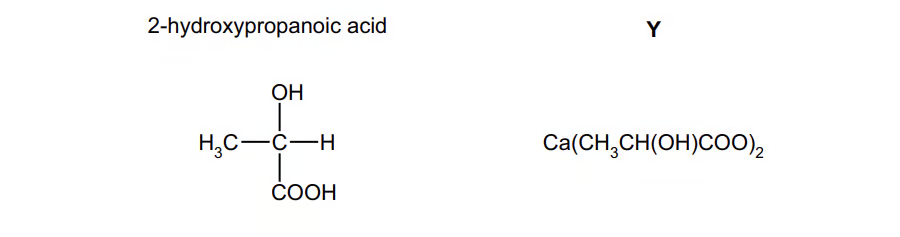
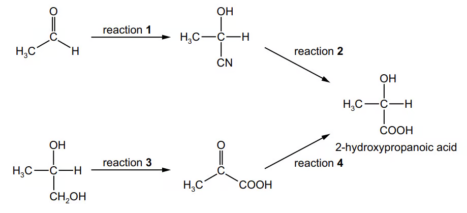
- State suitable reagents and conditions for reactions 1 and 3.
[4 marks]
Question 5 · 3.5 SQ Medium Q2
Two isomeric compounds are shown below in Fig. 2.1.
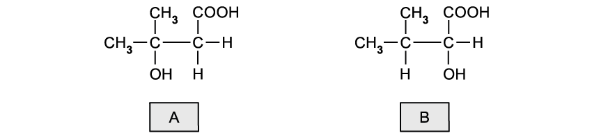
- State the name of each isomer.
- Suggest a chemical reagent to distinguish between these isomers and deduce the type of reaction taking place.
- State the observations made in each case.
[5 marks]
(b) Compound B, CH3CH(CH3)CH(OH)COOH, can be oxidised into compound C.
- Deduce the half-equation for the conversion of compound B into C.
- The half-equation for the oxidation reaction using acidified potassium dichromate(VI) is Cr2O72−(aq) + 14H+(aq) + 6e− → 2Cr3+(aq) + 7H2O(l). Deduce the overall redox equation for the conversion of B into C.
[3 marks]
(c) The same reaction in part (b) can be used to oxidise ethanol into ethanal or ethanoic acid, depending on the reaction conditions. Outline how the reaction conditions can be changed to produce ethanal or ethanoic acid. [2 marks]
(d) Under the right conditions, the two molecules of compound A can react together to produce a dimer.
- Name the type of reaction taking place and state the reaction conditions.
- Draw the structure of the product, showing clearly how the two molecules are joined.
[3 marks]
Question 6 · 3.5 SQ Medium Q3
Compound W can be converted into three different organic compounds as shown by the reaction scheme in Fig. 3.1.
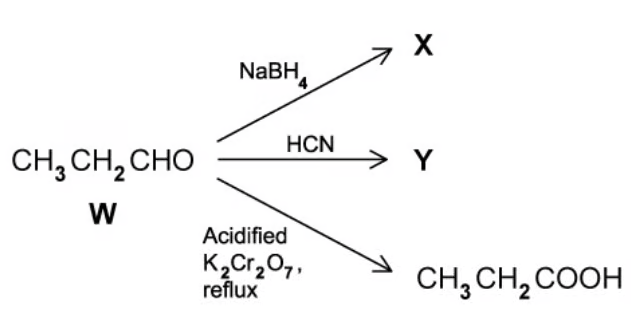
(a) Write an equation for the formation of X. Use [H] to represent the reagent in the equation. [1 mark]
(b) Identify the specific type of isomerism shown by the product Y in Fig. 3.1. Draw the mechanism to show the formation of Y and explain how this leads to the isomers of Y. [5 marks]
(c) When 5.00 cm3 of propanal (Mr = 58.0) were reacted with an excess of acidified potassium dichromate (VI) solution, 4.25 g of propanoic acid (Mr = 74.0) were obtained. The density of propanal is 0.810 g cm−3. Calculate the percentage yield for this reaction. [3 marks]
(d) A different carbonyl compound, Q (Mr = 72), reacts with 2,4-dinitrophenylhydrazine but not with Tollens’ reagent.
- State what you would see when Q reacts with 2,4-dinitrophenylhydrazine reagent.
- State what functional group is present in Q.
- Identify Q either by name or by its structural formula.
[3 marks]
(e) Q can be reduced to compound R.
- State a suitable reducing agent.
- Name the functional group in R (two words are required).
- Give the structural formula of R.
[3 marks]
Question 7 · 3.5 SQ Medium Q4
2-hydroxybutanoic acid can be made from propanal via a reaction with hydrogen cyanide and the subsequent hydrolysis of 2-hydroxybutanenitrile. A possible pathway is shown in Fig. 4.1. The incomplete mechanism for reaction 2 is shown in Fig. 4.2.
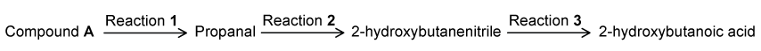
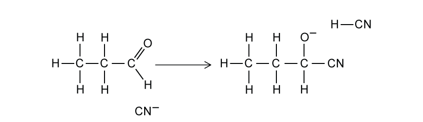
- State the reagents and conditions required for reaction 2.
- Complete the mechanism for this reaction.
[7 marks]
(b) 2-hydroxybutanenitrile contains a chiral centre. Draw the three-dimensional structures of the two optical isomers. [2 marks]
(c) State the reagent(s) for reaction 3. [1 mark]
(d) Compound A forms propanal when reacted with acidified potassium dichromate. Give the structural formula of compound A. [1 mark]
(e) Compound A and propanal were tested using a series of reagents. For each test, state the positive result and identify which compound(s) would give a positive result. [6 marks]
17 Carbonyl compounds — Structured Questions: Hard
Question 8 · 3.5 SQ Hard Q1
(a) Aqueous sodium tetrahydridoborate, NaBH4, is a common reducing agent. Identify two isomers with the formula C3H6O that cannot be reduced by aqueous NaBH4. [2 marks]
(b) Identify the two isomers with the formula C3H6O that can be reduced by aqueous NaBH4. [2 marks]
(c) When NaBH4 is used as a reducing agent followed by the addition of acid, the reduction products of ketones can exhibit optical isomerism, while the reduction products of aldehydes cannot.
- Classify the reduction products of aldehydes and ketones.
- Explain why the reduction products of ketones can exhibit optical isomerism, while those of aldehydes cannot.
[4 marks]
(d) Explain why the reduction product of a carbonyl compound, by NaBH4 and acid, cannot be a tertiary alcohol. [2 marks]
Question 9 · 3.5 SQ Hard Q2
(a) Analysis of 15.0 g of an organic compound, R, showed it to contain 69.8% carbon, 2.79 g of oxygen and the remaining mass was hydrogen.
- Calculate the empirical formula of the organic compound R.
- Compound R has a molecular mass of 86.0 g mol−1. Deduce the molecular formula of compound R.
[4 marks]
(b) Compound R is a straight-chain organic compound. One isomer of compound R produces optical isomers of compound S when reacted with hydrogen cyanide followed by dilute acid.
Compounds R and S were tested with acidified potassium dichromate(VI) and Tollens’ reagent. The results are shown in Table 2.1.
| Test | R | S |
|---|---|---|
| Acidified potassium dichromate(VI) | Green solution | Green solution |
| Tollens’ reagent | Silver mirror formed | No visible change |
Using this information and your answer from part (a), identify compounds R and S. Justify your answer. [4 marks]
(c) Draw 3D representations of the two optical isomers of compound S. [1 mark]
(d) There are some isomers of compound S that do not display optical isomerism. Draw the skeletal formula of these isomers. [1 mark]
Question 10 · 3.5 SQ Hard Q3
(a) LiAlH4 is a reducing agent. LiAlH4 cannot be used in aqueous solution because it reacts with water to produce LiOH(aq), H2(g) and a white precipitate which is soluble in excess sodium hydroxide. Identify the white precipitate. [1 mark]
(b) Two students try to prepare 2-hydroxybutanoic acid in the laboratory as shown in Fig. 3.1. Both students oxidise butane-1,2-diol to form P in reaction 1. One student then reduces P using LiAlH4. Q is formed. The other student reduces P using NaBH4. R is formed.
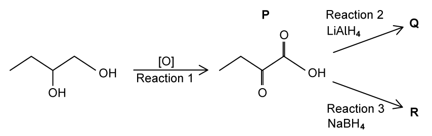
- State the reagents and conditions required for reaction 1.
- Identify which of Q or R is 2-hydroxybutanoic acid and explain the difference between reactions 2 and 3.
[4 marks]
(c) A third student prepares 2-hydroxybutanoic acid using propanal as the starting material as shown in Fig. 3.2. In step 1 the student reacts propanal with a mixture of NaCN and HCN.
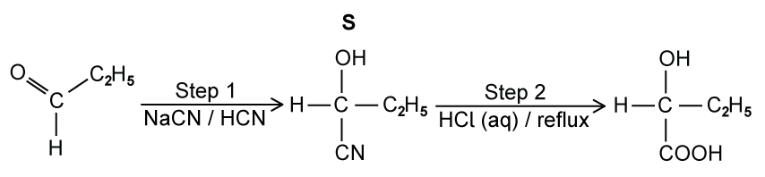
Draw the mechanism for the reaction of propanal with the mixture of NaCN and HCN to form S. Identify the ion that reacts with propanal. Draw the structure of the intermediate of the reaction. Include all charges, partial charges, lone pairs and curly arrows. [4 marks]
(d) Complete the equation for the reaction in step 2, when S is heated under reflux with HCl(aq). [1 mark]